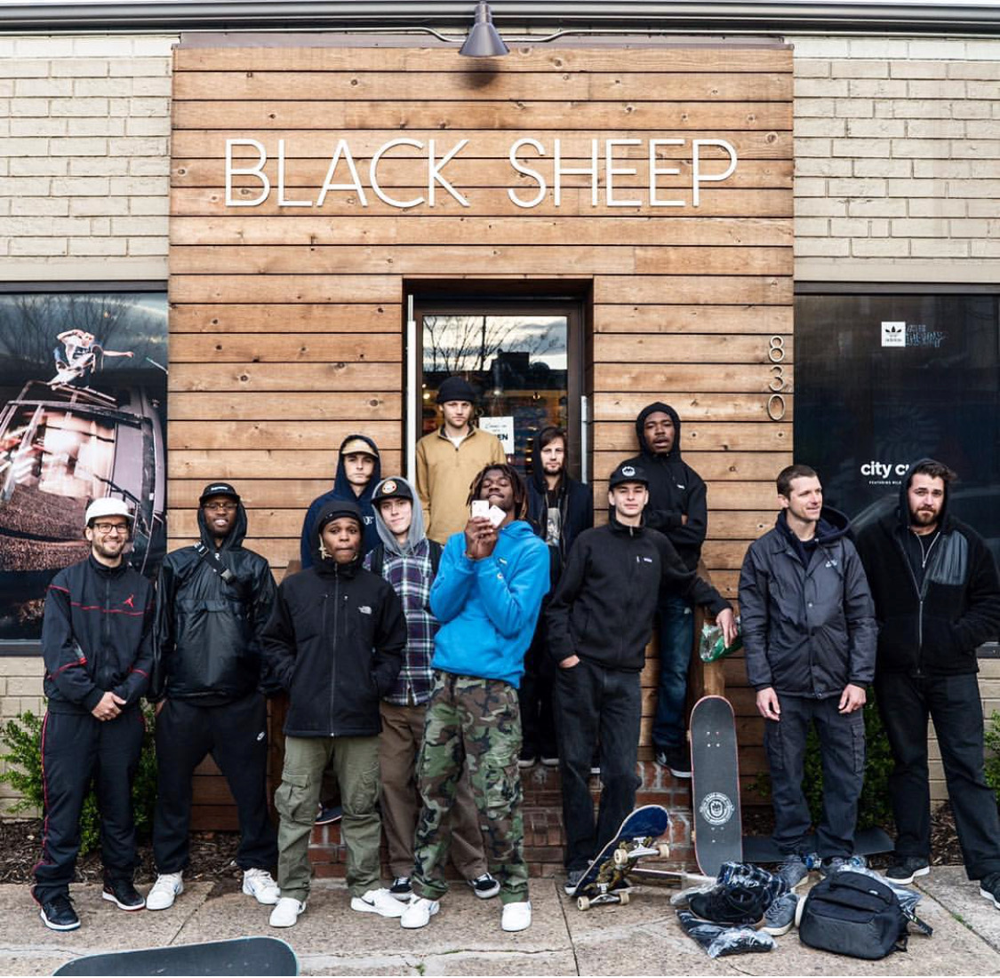

About Me
My name is Youssou Diop Jr. I was born December 4th 1996, in Bronx, New York. I played baseball much of my childhood in New York, in fact I took place in the Little League World Series. Once I finished middle school my family and I relocated to Waxhaw, North Carolina in 2010 in hopes of more peaceful living.
Through high school I never really took technology too seriously. I was always on top of the new iPhones and the latest and greatest tech.. I just never really did much research into it. I was more fond of building drift cars with my long time friend Charles. A few wrecked cars and expensive projects later lead me to a less money hungry hobby which happened to be skateboarding.
Skating and video games took up most of my occupation from there on with no clear plan of what was to come next in my life. Up until my father introduced me a little more to his occupation and what all web development and programming was. I started to fancy the though of breaking down and getting to really see what makes what we use on a daily basis tic. Now I am furthering my curiosity of programming at The University of North Carolina In Charlotte...